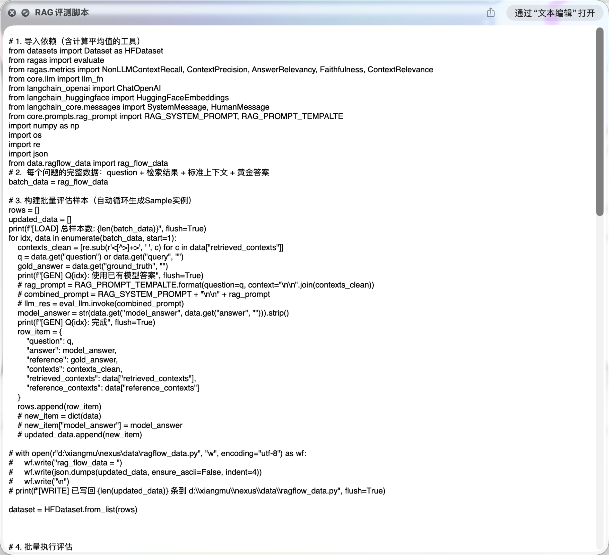
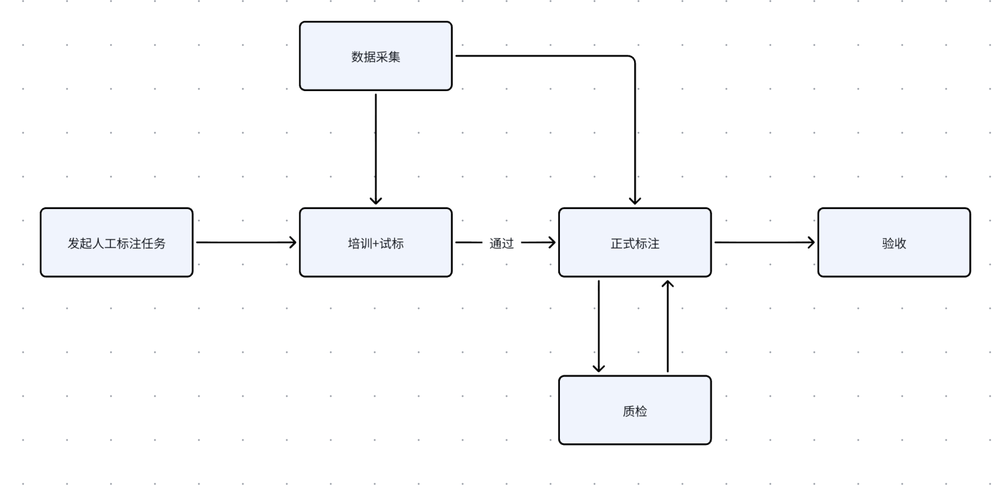
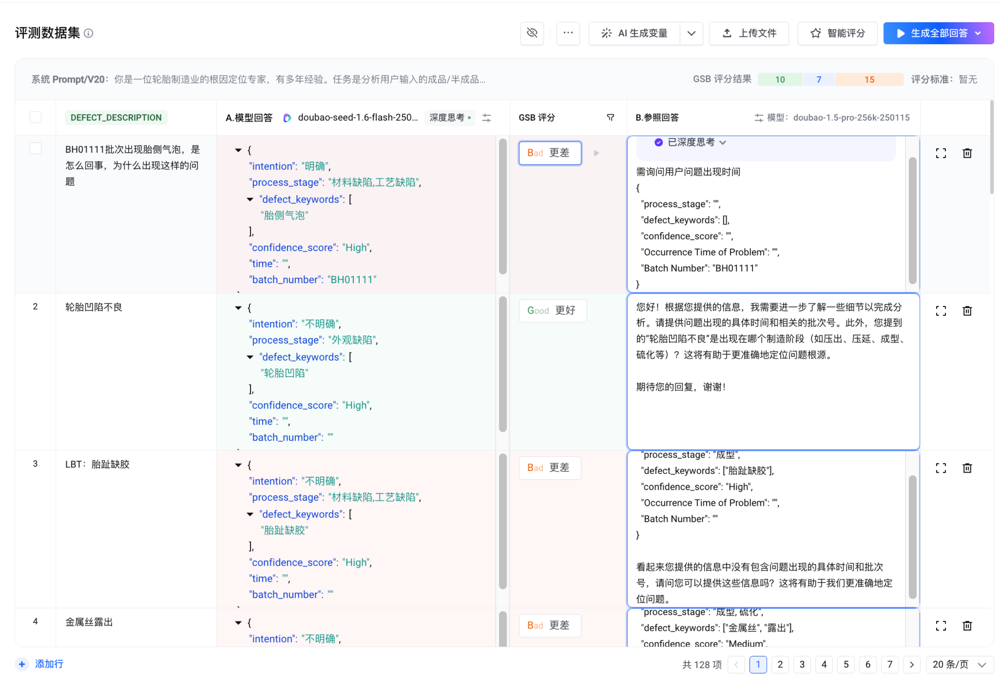
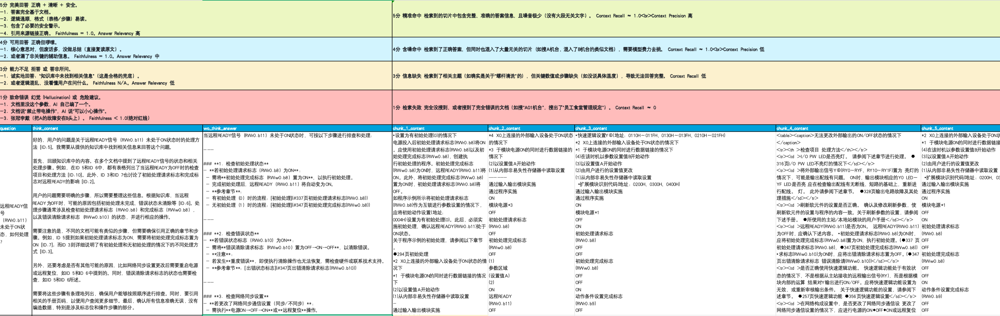

AI 产品评测
你觉得 Kimi、ChatGPT 和 Claude 哪个更好用？
Eval
什么是评测
你觉得 Kimi、ChatGPT、Claude
哪个更好用？
说"好用"——你凭什么这么说？
评测 = 回答「好不好」这个问题，并用结果做决策
功能性能、安全可控、伦理合规进行系统性验证与评估。
| 学术定义 | 通俗版 |
|---|---|
| 基于标准化指标体系 | 给 AI 出套综合卷 |
| 功能性能 / 安全可控 / 伦理合规 | 考察德智体美劳 |
| 系统性验证与评估 | 各科打分，算总分 |
Benchmark = 行业公认的"标准化考卷"
标准化任务集
一组固定题目。
例：MMLU 1.5 万道
多学科选择题
统一评分规则
答对/答错 + 加权方式。
例：准确率 =
正确数 / 总数
可复现流程
不同模型用同样方式跑。
同 prompt + 同测试集 +
同温度
| 类型 | 代表 Benchmark | 考什么 |
|---|---|---|
| 通用能力 | MMLU · C-Eval · CMMLU | 多学科知识 |
| 代码能力 | HumanEval · SWE-bench | 编程任务 |
| 推理能力 | GSM8K · MATH · BIG-bench | 数学 / 复杂推理 |
| 多模态 | MMMU · MMBench | 图文理解 |
| 用户偏好 | Chatbot Arena (LMArena) | 真实对战盲投 |
通用考卷 vs 你公司的入职考试
| 视角 | Benchmark | 业务评测 |
|---|---|---|
| 谁出题 | 学术界 / 开源社区 | PM 自己出 |
| 谁来考 | 模型厂商 + 学界 | 你自己跑 |
| 用途 | 模型选型参考 | 业务上线决策 |
| 范围 | 通用能力对比 | 你的具体业务场景 |
Benchmark 是通用考卷——业务评测是入职考试。
通用考卷考不出你业务场景，必须自己出题。
回到开头——
你怎么知道
你做的产品好不好？
这就是接下来要回答的——为什么 PM 必须做评测。
为什么
客户要求紧急切 R1 · 三周翻车
• 需要支持国产
• 榜单排名很高
• 成本只有 1/10
• 蒸馏版与满血版差异
• 内容结构质量低
• 影响原业务场景
• 不知道问题出在哪
• 找不到人背锅
没有评测，就没有人对结果负责——
甚至不知道用户说的差到底有多差。
两个真实痛点
电商 AI 客服 投诉率
3% → 8%
PM："用户反馈不好，需要优化"
运营："是用户预期没管理好"
算法："模型在 SOTA 上没问题"
老板："成本在涨，效果在哪？谁能给我数据？"
❌ 补丁式迭代 · 算法/产品/运营互相甩锅
AI 搜索 留存 持续下降
| v2.1 | 35% | "效果提升很多" |
| v2.2 | 32% | "差不多了" |
| v2.3 | 28% | "怎么又降了" |
| v2.4 | 22% | "怎么跌这么多？" |
❌ 不知道好还是差 · 趋势不可见
评测让问题可见 · 可量化 · 可解决
| 问题分层 | 根因定位 |
|---|---|
| 检索模块 | 知识库覆盖不足 |
| Prompt 工程 | 缺少品牌调性约束 |
| 事实核查 | 缺少机制 · 知识库召回率低 |
| 模型选择 | 过于激进 · 需要降级策略 |
同样的 22% 留存——
有评测 = 知道修哪里 · 没评测 = 只能继续猜。
AI PM 的工作职责
- 负责 AI 产品效果评测体系建设
- 建立 LLM 应用的 质量监控指标
- 进行 Bad Case 分析和归因
- 与算法团队协同 优化 Prompt 和检索策略
- 建立 A/B 实验和灰度发布流程
传统 PM → AI PM
| 工作内容 | 传统 PM | AI PM |
|---|---|---|
| 需求分析 | 用户调研 + 竞品分析 | + AI 能力边界评估 |
| 产品设计 | 功能流程 + 交互设计 | + Prompt 工程 |
| 效果验证 | A/B 测试 + 用户反馈 | + 评测集 + 指标体系 |
| 迭代决策 | 数据分析 + 定性反馈 | + Bad Case 归因 |
本质区别：传统 PM 写 确定性逻辑 · AI PM 管 概率性输出。
评测的全景
AI 产品四层架构 · 平台对位标注
★ = PM 必看 · ☆ = 知道即可
★AgentBench · SWE-bench · RAGAS · TruLens
☆MMLU · HumanEval · MMMU · C-Eval · CMMLU
研究 AI 看榜单 · 业务落地 不看榜单。榜单是行业素养，业务决策是 PM 专业能力。
AI 产品评测的 7 步流程
| Step | 要回答的问题 | 产出物 |
|---|---|---|
| 01 定目标 | 这次评测是为了什么决策？ | 决策语句（选型/上线/迭代/监控） |
| 02 拆指标 | 这个决策业务上看什么数字？ | 1–3 个业务指标（北极星） |
| 03 拆维度 | 业务指标拆成哪些可测点？ | 定性 + 定量维度清单 |
| 04 造评测集 | 拿什么数据来测？ | 真实日志 40 + 历史 bad case 20 + 边界 20 + AI 生成 20 |
| 05 定评分 | 每个维度怎么变成分数？ | 评测方法（谁来评）+ 打分方法（怎么打）+ Rubric |
| 06 跑测试 | 怎么跑？关注什么？ | 执行报告 + Bad case 收集 |
| 07 统计分数 | 分数老板能不能拍板？ | 归因分布 + 决策建议 |
这 7 步对 模型 / 提示词 / Agent / RAG 都适用——方法一样，对象不同。
怎么做评测
定目标 · 解决什么决策
| 决策类型 | 评测要回答什么 |
|---|---|
| 选型决策 | 新业务选 A 还是 B 模型？ |
| 替换决策 | 现在用的能不能换更便宜的？ |
| 升级决策 | 厂商出新版本，要不要升？ |
| 降级决策 | 成本压力下能不能用更小的模型？ |
为了 什么 决策，
我要评测 什么，
得出 什么 结论。
例：为了 选型 决策，
我要评测 3 款多模态模型，
得出 古风角色图生成最优解 结论。
拆指标 · 这件事值不值
业务指标的判断标准：这件事值不值，不是漂不漂亮。
| 业务关心 | 业务指标举例 |
|---|---|
| 钱 | 单次生成成本 · ROI |
| 效率 | 出图时长 · 人均产出 |
| 留存 | 采纳率 · 复用率 |
| 风险 | 违规率 · 版权合规率 |
决策：选 3 款多模态模型里 生成古风角色图最优解
业务关心：采纳率 ≥ 70% · 30 秒出图 · 可商用率 ≥ 90%
拆维度 · 从业务指标推到可测点
→ 1-5 分 Rubric 打分
→ 自动化脚本 / 比对算分
① 业务指标动词化：「采纳率高」→「用户什么时候采纳」→「风格对 / 人脸不崩 / 服装合理」
② 每个动词配一种打分：主观 → 定性 Rubric · 客观 → 定量脚本
造评测集 · 4 个来源
| 来源 | 占比 | 采集要点 |
|---|---|---|
| 真实用户日志 | 40% | 重点采用户改写 / 重提交的那批 |
| 历史 Bad case | 20% | 投诉 + 算法异常 + 差评截图 |
| 边界 case | 20% | 复杂长链路 + 极端脏数据 |
| AI 生成 | 20% | Meta 提示词生成 + 人工筛选 |
为什么专门采 bad case，不采答得好的？
→ 评测目的是找问题。Good case 给老板看，bad case 给迭代用。
Bad case 收集表实例（点击放大）
 ↗ 放大
↗ 放大
3 种评测方法 · 谁来打分（点图放大）
最省力最高效
适用：答案明确任务（RAG / FAQ / 代码 / 结构化抽取）
关键：写规则 + 比对算分

↗ 放大大模型当裁判
适用：主观维度也能跑分（语气 / 完成度 / 风格）
关键：角色 + 维度 + 输出格式 + 多模型交叉
 ↗ 放大
↗ 放大
最贵最权威
适用：高敏感 / 高主观 / 专业判断
关键：培训 + 3 人同标 + 抽检 + 长期一致

↗ 放大人工评测 3 个坑：培训试标达标才能上岗 · 3 人同标取最多 · 2 人不一致重标 · PM 自己先评一遍（不查日志的指标都是想当然）
3 种打分方法 · 怎么打
| 方法 | 适用 | 操作 |
|---|---|---|
| 评分法 1-5 分 | 单模型质量评估 · 多维度独立打分 | 每个维度独立打 1-5 分 + Rubric 锚定 5/3/1 分 |
| 对比法 GSB Good / Same / Bad |
两两对比 · 选哪个 | A 比 B 好选 G · 一样选 S · A 比 B 差选 B |
| 对比法 SBS Side-By-Side |
两两对比 · 更细分档 | 6 档：A 更好 / A 好一些 / B 更好 / B 好一些 / 一样好 / 一样差 |
Rubric 模板 · 拿「风格还原度」做样板（1-5 分必锚定示例）
✓ 服饰、配饰、面部都符合宋朝古风
跑测试 · PM 关注什么
| ① | 跑评测集 · 按 Step 5 定的方法批量执行 |
| ② | 算分 · 每条数据按 Rubric 出分 |
| ③ | 出报告 · 整体分 + 维度细分 + Bad case 清单 |
盯 定性指标 + 收集 Bad case
定量算法直接给结论——准确率、召回率、TTFT 跑完出数。
PM 的活儿在定性维度：自己评一遍，标记低分 case，进入下一步归因。
跑测试出的不是最终分数——是下一步要归因的 Bad case 清单。
→ 把每个低分 case 编号 + 截图 + 上下文，留给 Step 07 统计分数 + 归因用。
统计分数 · 出可拍板结论
| 归因层级 | 典型表现 | 验证方法 |
|---|---|---|
| 模型能力 | 换 Prompt 后仍然答错 | 同一题测多个模型对比 |
| Prompt 设计 | 调 Prompt 后能答对 | A/B 不同 Prompt 版本 |
| 检索召回 | 相关文档没召回 | 检查检索日志 |
| Agent 行动 | 任务执行错误 | 核查原始数据源 |
古风角色图选型结果（示例数据）
| 模型 | 整体分 | 风格还原 | 面部一致 | 服装合理 | 出图时长 | 成本 |
|---|---|---|---|---|---|---|
| A 模型 ★ | 4.2 | 4.5 | 4.0 | 4.1 | 22s | ¥0.18 |
| B 模型 | 3.8 | 4.6 | 3.2 | 3.5 | 18s | ¥0.12 |
| C 模型 | 3.6 | 3.8 | 4.1 | 3.0 | 35s | ¥0.25 |
拍板结论：A 模型在「面部一致 + 服装合理」领先，整体分 ≥ 4.0 达标 → 建议选 A 上线。
实操 · 测 3 款多模态模型 古风角色图 效果
· 即梦（豆包多模态）
· 通义万相（阿里）
· Midjourney v6
评测维度
· 风格还原度（1-5）
· 面部一致性（1-5）
· 服装合理性（1-5）
· 出图时长 / 成本（自动）
交付：3 行打分表 + 1 个选型结论（哪款？为什么？）
提示词评测 · 微调差异
方法跟模型评测一样——差异只在每一步具体长什么样。
| Step | 模型评测 | 提示词评测 · 微调点 |
|---|---|---|
| 01 定目标 | 选哪款模型 | 选哪版 prompt / 防退化 / 稳定性 |
| 02 拆指标 | 业务成本 + 效果 | 采纳率 / 改写次数 / 发布率 |
| 03 拆维度 | 偏定量 | 偏定性（完成度 / 格式 / 语气） |
| 04 造评测集 | 真实日志 + bad case | 业务输入 × prompt 变体 |
| 05 定评分 | Rubric / 对比法 / 脚本 | LLM-as-Judge 为主 |
| 06 跑测试 | PM 关注定性 | 同样关注定性 + 稳定性 |
| 07 统计分数 | 选型结论 | 哪版上线 / 有没有退化 |
提示词评测数据集实例（GSB 对比）

↗ 放大实操 · 评测这条小红书笔记生成 prompt
① 用这条 prompt 跑 5 次，记录输出
② 设计 4 个维度 + Rubric 1-5 分
(标题爆款度 / 钩子吸引力 / 互动引导力 / 约束遵循度)
③ 给 5 次输出打分，找出哪个维度最不稳定
④ 用 LLM-as-Judge 让另一个模型当裁判，对比人工分
⑤ 提 1 条改进建议：改哪一句？为什么？
Agent 评测难在哪
| 差异 | 模型 / 提示词评测 | Agent 评测 |
|---|---|---|
| ① 单步 vs 多步 | 一次问答 · 输入 → 输出 | 多步骤错一步全错 · 规划 → 调工具 → 检索 → 生成 → 自我修正 |
| ② 路径唯一 vs 多路径 | 答案对照 | 同任务多解法 · 不能简单"标准答案对比" |
| ③ 整体打分 vs 分步打分 | 一个总分 | 必须 trace 级 + 端到端分别评 · 拆成 10 个指标加权 |
PM 三件套 · Agent 评测的产出物
Agent 评测 · 分层拆开评
| 层 | 关键指标 |
|---|---|
| Trace 级 每一步骤 | · 意图识别正确率 · 工具调用正确率 · 检索召回率 · 中间产出可用率 |
| 端到端 最终产出 | · 任务完成率 · 路径合理性 · 整体质量分 |
| 用户体验 实际感受 | · 采纳率 · 复用率 · 满意度 |
| 类型 | 典型表现 · 例子 |
|---|---|
| ① 路径错 | 选错工具 / 错流程 该用搜索却用了计算器 |
| ② 输入解析错 | 用户意图理解错 问"价格"理解为"成本" |
| ③ 中间执行错 | 某步工具调用失败 检索 API 超时整链断 |
| ④ 输出整合错 | 中间对、最后错 章节顺序错 / 数据漏汇总 |
Agent 归因比模型评测多一层——不光问 "哪一类错"，还要问 "在哪一步错"。
Agent 评测 · PM 怎么建、怎么读
| 层 | 举例 |
|---|---|
| 业务指标 | 报告撰写效率 ≤ 2 人日 内容采纳率 ≥ 52% |
| 评测指标 | 事实性准确率 ≥ 82% 关键信息召回率 ≥ 95% 报告结构合理性 ≥ 4.0 |
| ① | 预期路径（标注步骤序列） |
| ② | 预期工具调用（哪些 API / Tool） |
| ③ | 预期中间产出（每步该输出什么） |
| ④ | 等价正确标注（多解法时哪些都算对） |
Rubric 范例 · 「报告结构合理性」1-5 分
| ① | 看整体分 整体是否达标 → 上不上线 |
| ② | 看 trace 分布 找断点 = 哪一步最低分 |
| ③ | 看路径分布 看冗余 = 走了不必要的步骤 |
RAG 评测 · 就2 个核心指标
| 指标 | 评什么 | 怎么测 |
|---|---|---|
| 召回率 Recall | 该召回的有没有召回 | 标注 query 应匹配的 docs · 看实际召回多少 |
| 事实性准确率 | 召回后的回答有没有编 | 把答案和原文做事实核对 |
准备 query 集 → 跑 RAG → 看召回 → 看回答 → 出报告
PM 关注 vs 不关注
| PM 关注 | PM 不关注 |
|---|---|
| 召回不全的 query 类型分布 | 向量化算法细节 |
| 回答编造的 层级分布（哪类问题最爱编） | 检索引擎实现 |
| 业务核心 query 的 事实准确率 | 索引优化技术 |
RAG 评测 · 怎么算 · 怎么避坑
Recall@K =
实际召回的相关 doc 数
━━━━━━━━━━━━━━━
应召回的相关 doc 数
标注方法：每条 query 人工标注「这条 query 应该匹配哪几条 doc」，跑 RAG 后比对。
Factuality =
事实核对正确的回答数
━━━━━━━━━━━━━━━
总回答数
核对方法：把答案的每条事实抽出来，跟原文 / 知识库做对照（人工 + LLM-as-Judge 双盲）。
RAG 评测 · 3 个常见坑
- 知识库覆盖盲区 · 业务核心问题不在库里 → 看似事实错，其实是数据缺
- 召回噪声 · 召回了相关但不准的 doc → 必须看 Precision，不只 Recall
- "答案明显但召不到" · 用户原话和文档表述差异大 → 评测集要包含同义改写 query
RAG 评测报告实例

↗ 放大方法一样 · 对象不同
| 维度 | 模型评测 | 提示词评测 | Agent 评测 | RAG 评测 |
|---|---|---|---|---|
| 评什么 | 模型本身能力 | 同模型 prompt 设计 | 多步链路整体表现 | 检索召回质量 |
| 数据集 | benchmark + 业务样本 | 业务输入 × prompt 变体 | 真实任务 + 路径标注 | query 集 + 标注答案 |
| 典型维度 | 准确率 / 幻觉 / 速度 | 完成度 / 格式 / 语气 | 端到端成功率 + 步骤准确率 | 召回率 + 事实性 |
| 评测方法 | 自动评为主 | LLM-as-Judge + 人工 | trace 级 + 端到端 | 自动 + 人工核对 |
| 难度 | ⭐⭐ | ⭐⭐⭐ | ⭐⭐⭐⭐⭐ | ⭐⭐⭐ |
| PM 何时用 | 选型阶段 | 上线前 + 迭代时 | 上线后验证 + 持续优化 | RAG 接入 + 知识库更新 |
方法一样，对象不同——这就是 AI 产品评测的全貌。
收尾
一次评测只是快照
真正有价值的是建立一个持续转起来的闭环。
五大面试话术速查
- ① 你怎么知道产品好不好？ — 6 步法 + 业务指标，不看公开榜单
- ② 为什么不用最强模型？ — 业务场景表现 ≠ 榜单分
- ③ 给我看一份评测报告？ — 指标 / Badcase / 归因 / 决策
- ④ 怎么评估 prompt 好不好？ — A/B + LLM-as-Judge + 人工抽检
- ⑤ 做过 Agent 评测吗？ — 业务 + 评测两层 + 4 层归因
维度 贴合 指标，
才能测出效果。
下次面试官说"给我看一份你做过的评测报告"——
你心里有底，不慌。